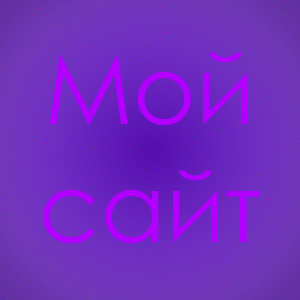

Об этом сайте.

Добро Пожаловать, юзер!
Этот сайт я создал, как свой личный блог, где я буду вести полноценную деятельность.
Здесь вы можете узнать обо мне больше чем везде. По-мимо этого, я пишу здесь все новости
о себе и своих действиях. Так что это единственное достоверное и официальное моё логово.